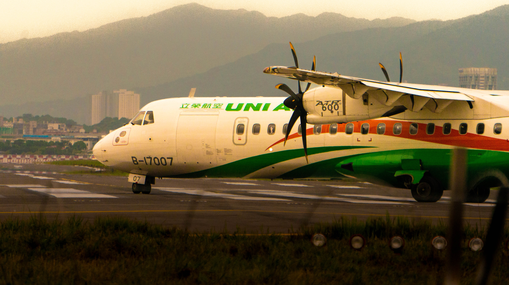

ATR-72 (UNI AIR)
Region : Taiwan (ROC)
Spotted place : Taipei Songshan Airport (TSA/RCSS)
Gears : SONY NEX-6 ƒ/6.3 1/4000 210 mm ISO 1250
Region : Taiwan (ROC)
Spotted place : Taipei Songshan Airport (TSA/RCSS)
Gears : SONY NEX-6 ƒ/6.3 1/4000 210 mm ISO 1250